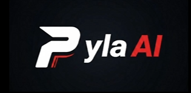

Movement
Movement logic keeps the player active and responsive, using detection results and configured behavior to make practical navigation choices.
Features
Pyla AI combines computer vision, emulator control, and configurable behavior so runs can be tuned, reviewed, and improved.
Movement logic keeps the player active and responsive, using detection results and configured behavior to make practical navigation choices.
Shooting actions are tied to target awareness, helping the bot engage enemies when detection confidence and timing line up.
Gadget handling can be tuned for the brawler and match flow, keeping special actions predictable during long sessions.
Detection models identify threats, lanes, walls, and obstacles. The training set is documented as 100,000+ images, giving the project a stronger base than simple color matching.
Run results can be reviewed after sessions, making it easier to spot configuration problems and compare changes.
How it works
Pyla AI uses computer vision models to detect relevant game state from emulator frames, then sends configured actions through the local emulator workflow. Reliability depends on correct resolution, display scale, ADB access, and current model quality.
